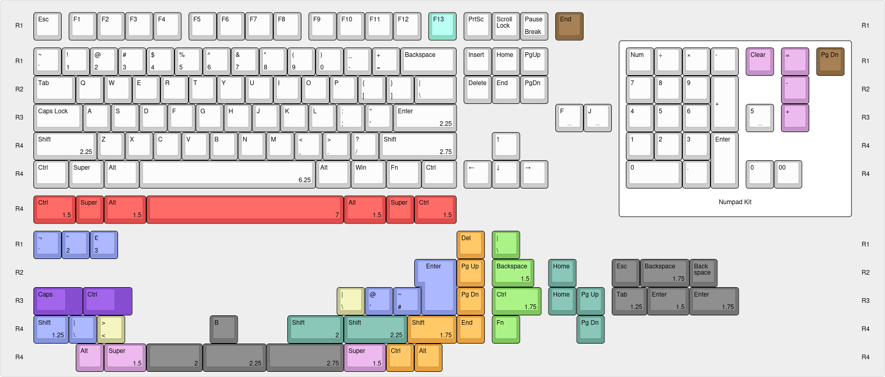

Keyboard kitting

Base Kit
White: ANSI TKL
These keys support standard ANSI TKL layout with a 6.25u bottom row.
Barred F and J are also provided, the non-barred versions may be scooped
or plain.
Red: Tsangan
This is a very common option on many boards as an alternative to
6.25u bottom row, and on some boards - particularly TKLs - is the only
bottom row option available.
Cyan: F13
TKLs with this key are increasingly common, including in-stock
options such as the Novelkeys NK87 and NK87 EE. It is added in the base
kit to avoid the need to buy an extension kit for a single key for
boards like this.
Purple: Stepped caps
Stepped Caps Lock and stepped Ctrl
Orange: 65/75
Support for 65% and 75% layouts with the most common rightmost
columns
- 65%: Del, Pg Up, Pg Dn, End
- 75%: Del, Home, Pg Up, Pg Dn, End
- Extra 1u Ctrl and Alt mods are included for the space between the
spacebar and arrows on 65% and 75% layouts that don't have a blocker. An
extra 1u super key is already included in the red keys
Green: HHKB
- In combination with the super and alt from the red keys and 1.75u
shift from the orange keys, Windows/Linux HHKB layout is supported
- In combination with the pink Mac keys, Mac HHKB layout is
supported
Brown: 1800
On 1800 layout, End and Pg Dn sit on R1, above the numpad. The End
key is provided in the base kit to also allow use of the end key with
uncommon 75% layouts where Home and End are on the top row.
Blue: UK ISO
These are not provided in a NorDe international kit because UK ISO
keys do not overlap with any keys in German, Swedish/Finnish, Norwegian
or Danish.
Pink: Mac
Super and Alt (Command and Option) are swapped round on the bottom
row on Mac, so these are required for Mac bottom row support when using
Tsangan layout
Grey: Forties and Alice
- Supports the usual Alice/Arisu spacebar sizes of 2u, 2.25u and
2.75u
- Extra B for Alice
- Allows use of split spacebar on boards like the Ikki68 Aurora, in
2.25 - 1.25 - 2.75 layout
- Basic support for forties layouts, such as Planck, Minivan, Neko,
UD_40, UT47, Daisy
Teal: Uncommon 65/76
- 2u and 2.25u Right Shift for layouts where arrows are offset by
0.25u/0.5u (eg, "660" layout); 2u is also used for ANSI left shift when
using non-standard stagger (eg DZ60 PCB)
- Support for uncommon right columns on 65/75:
- 75%: Del, Pg Up, Pg Dn, Home, End (eg, Keychron K2)
- 75%: blocker/rotary, Insert, Delete, Pg Up, Pg Dn
- 65%: Insert, Del, Pg Up, Pg Dn (eg, default on CU65, Practice65,
Space65)
- This layout preserves the position of Insert & Delete as on
standard TKL
- 65%: blocker/rotary, Delete, Pg Up, Pg Dn (eg, default on
Iron165)
- 65%: Del, Home, Pg Up, Pg Dn (eg, Drop Alt)
Yellow: US/Terminal ISO
US ISO "Terminal ISO" keys. Some people like this I guess.
Numpad
White: Numpad
- Adds 1u zero either for use alongside 00, or for 1800 layout where
that space is taken by arrows
- Barred 5
Pink: Mac
- Mac numpads use this layout of equals, minus and plus on the
leftmost column instead of 1u minus and 2u-tall plus
- Mac numpads don't have Num Lock, so the Clear key is provided
instead
Brown: 1800
Pg Dn goes above the numpad on 1800 layout. This is used alongside
the R1 Home key from the base kit
Created by members of the #keyboards channel of the Relay.fm community Discord.